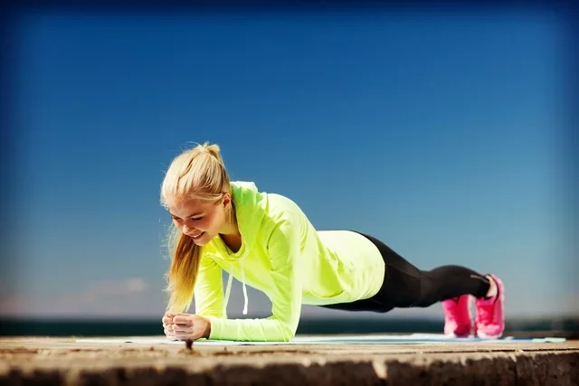

Treino de costas em casa: 6 opções de exercícios
O treino de costas em casa pode ser feito para atingir diferentes objetivos, desde melhorar a postura, fortalecer os músculos, aumentar a definição ou até gerar hipertrofia. Estes exercícios permitem trabalhar todos os músculos das costas, como o romboide, o trapézio e o músculo redondo, mas também fortalecem músculos de outros locais, especialmente o deltoide, o bíceps, o tríceps e o abdômen.
O treino em casa pode ser feito sem peso, mas para quem deseja aumentar a intensidade dos exercícios é recomendado o uso de pesos, que podem ser uma garrafa pet com areia, mochilas com pacote de arroz ou simplesmente halteres. Outra opção é usar uma faixa elástica, por exemplo.
Antes de iniciar os treinos é importante realizar uma consulta médica para avaliar as condições físicas e ter orientação de um educador físico que deve indicar o peso para cada exercício de forma individualizada.
Como fazer o treino de costas
O treino de costas em casa pode ser feito 2 a 3 vezes por semana, em 2 a 3 séries de 10 a 15 repetições, dependendo do exercício. O ideal é escolher de 3 a 4 exercícios por treino.
É importante fazer aquecimento antes dos exercícios, sendo uma boa opção movimentar os braços para cima e para baixo de forma alternada, e para os lados, várias vezes e num ritmo acelerado, por exemplo.
Algumas opções de exercícios para fazer um treino de costas completo em casa são:
1. Remada curvada
A remada curvada é uma excelente opção de exercício para costas, pois trabalha os músculos superiores das costas, além do deltoide, trapézio e bíceps, melhorando a força e a resistência muscular e também a postura. Esse exercício deve ser feito com o uso de peso.
Como fazer: de pé, com as pernas afastadas na largura do ombro e as pernas levemente flexionadas, inclinar o tronco para frente. Os braços devem ficar alinhados ao corpo e as mãos voltadas para dentro, segurando um peso em cada mão. É importante que as costas fiquem retas e o abdômen contraído. Puxar o peso para cima, flexionando os braços. Abaixar lentamente os braços na direção do chão, esticando-os completamente. A cada movimento dos braços, deve-se inspirar quando os braços estiverem esticados e expirar quando estiverem flexionados. Fazer de 2 a 3 séries de 12 repetições e descansar 1 minuto entre as séries.
2. Crucifixo invertido inclinado
Este exercício trabalha o fortalecimento e definição ou hipertrofia dos músculos das costas como o romboide, o trapézio e o redondo, além dos músculos dos ombros, peitoral e abdômen. Esse exercício deve ser feito com o uso de pesos ou uma faixa elástica.
Como fazer: de pé, com os pés afastados na largura do ombro e os braços ao longo do corpo, segurar um peso em cada mão. Com o abdômen contraído e as costas retas, inclinar o tronco para frente. Levantar os braços para os lados sem flexionar os cotovelos e com as palmas das mãos voltadas para baixo, até que fiquem no nível dos ombros. Abaixar os braços lentamente, voltando à posição inicial. É importante inspirar quando os braços estão para baixo e expirar quando levantar os braços.
Caso se utilize a faixa elástica, a posição do exercício é a mesma, no entanto, deve-se colocar a faixa elástica no chão, pisar no meio da faixa com os dois pés e pegar cada ponta da faixa elástica com as mãos. Elevar os braços lentamente puxando a faixa para cima e, depois, voltar a baixar os braços. Repetir o movimento dos braços de 10 a 15 vezes em 2 a 3 séries.
3. Elevação de braços
Como fazer: sentar em um banco ou cadeira e colocar os pesos de forma que o braço e o antebraço formem um ângulo de 90 graus. É importante que as palmas das mãos fiquem voltadas para a frente, as costas sempre retas e o abdômen contraído. Levantar os pesos até ficar com os braços esticados e retornar à posição inicial.
4. Flexão de braço inclinada
A flexão de braços inclinada trabalha vários grupos musculares, incluindo as costas, os tríceps, o peitoral e o abdômen, o que permite fortalecer e definir os músculos das costas. Este exercício não precisa de pesos e deve ser feito utilizando uma superfície para criar a inclinação do corpo como Kettle, banquinho ou cadeira, por exemplo.
Como fazer: com os braços esticados à frente do corpo, apoiar as mãos na superfície, em uma distância um pouco maior que a largura dos ombros. Manter os pés no chão, as pernas esticadas e a coluna reta. Contrair o abdômen e flexionar os cotovelos até que o peito encoste na superfície e retornar à posição inicial. Pode-se fazer 2 a 3 séries de 8 a 15 repetições cada, descansando de 60 a 90 segundos entre as séries.
5. Superman
O exercício do superman simula a posição do voo do super-homem e trabalha o fortalecimento da região lombar das costas, além dos músculos do abdômen, glúteos, quadris, posteriores da coxa e ombros, melhorando a postura e a flexibilidade. Para fazer este exercício não é necessário uso de pesos.
Como fazer: deitar no chão com a barriga para baixo, com as pernas esticadas, braços estendidos acima da cabeça e palma das mãos voltadas para baixo. Contrair o abdômen, os glúteos e a coluna lombar. Elevar os braços e as pernas para trás, como se fosse voar. É importante que a cabeça fique alinhada com a coluna e, por isso, é importante manter o olhar no chão. Além disso, a elevação das pernas e braços não deve exceder 20 cm do chão. Manter essa posição por 2 a 5 segundos e voltar à posição inicial. Repetir esse movimento por 1 minuto.
6. Prancha
Embora a prancha seja um exercício mais focado no fortalecimento dos músculos do abdômen e core, também é considerado um exercício completo, ou seja, que trabalha outras áreas do corpo, incluindo as costas. Neste exercício não é necessário uso de pesos.
Como fazer: deitar de barriga para baixo e então elevar o corpo, apoiando no chão somente os antebraços e as pontas dos pés, sempre com o abdômen e glúteos contraídos e cabeça e corpo retos, alinhados com a coluna vertebral. Deve-se ficar parado nesta posição o máximo de tempo. Pode-se começar com 30 segundos e ir aumentando o tempo aos poucos. Este exercício não é feito em séries.
O que fazer depois do treino
Após o treino de costas, deve-se fazer alongamentos para ajudar a relaxar a musculatura, tonificar os músculos, melhorar a flexibilidade, aumentar a circulação e prevenir lesões.
Algumas opções de alongamento incluem:
1. Sentar sobre os calcanhares
Esse alongamento permite alongar os músculos das costas como trapézio, rombóide e redondo, além dos deltóides, peitorais e coluna, e deve ser feito sentado.
Como fazer: ficar de joelhos no chão e encostar as nádegas sobre os calcanhares, como se fosse sentar. Inclinar o tronco para frente aproximando do chão do chão, mantendo os braços esticados e as palmas das mãos para baixo. Fazer esse movimento por 30 a 60 segundos.
2. Flexão lateral do tronco

A flexão lateral do tronco alonga os músculos das costas, além do dorso e quadris e deve ser feito em pé.
Como fazer: de pé, com os pés afastados na largura dos ombros, elevar os braços para cima mantendo-os estendidos e juntar uma mão à outra. Inclinar o corpo para um lado, o máximo que conseguir, e voltar à posição inicial e inclinar para o outro lado. Fazer esse movimento por 30 para cada lado.